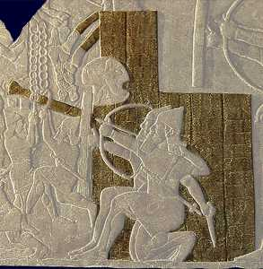

Siege engineA siege engine is a wheeled vehicle which can be fitted with a battering ram sticking out of the front. They were made from a wooden frame covered with very thick leather. Water could be poured through pipes so that the battering ram did not catch fire from burning torches. |